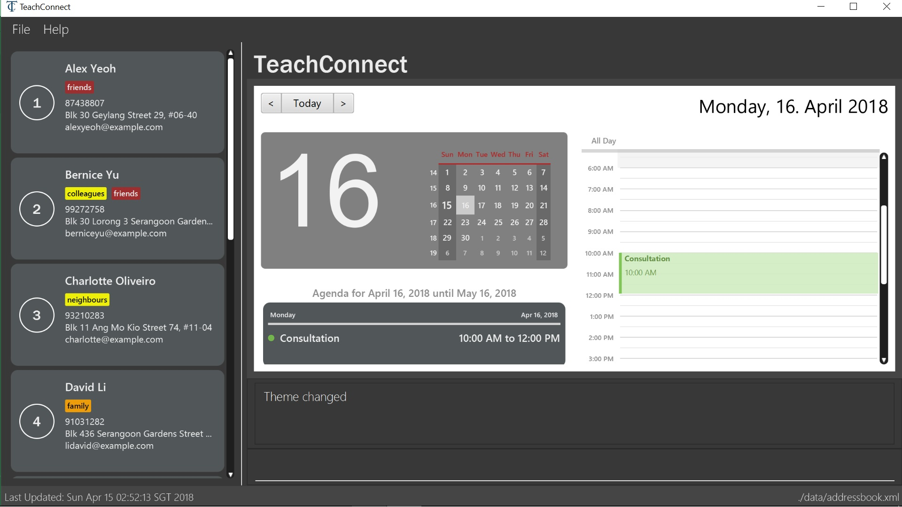
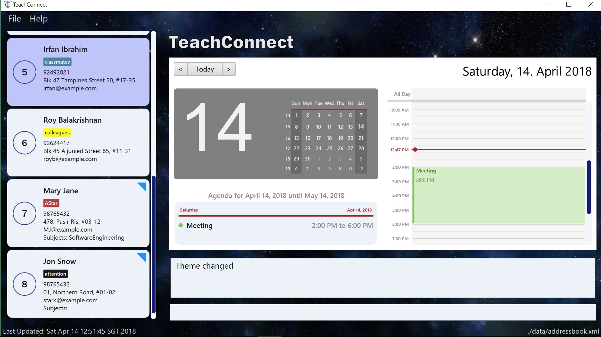

Project: TeachConnect
TeachConnect is a contact and event management application designed for teachers and educational professionals.
TeachConnect is designed to best aid users who prefer to enter input using keyboard instead of the Graphical User Interface.
Code contributed:
Functional code
Test code
Portfolio Purpose
This portfolio was made to document all contribution I have made to the project.
The contents included are:
-
The external behavior of my contributions.
-
The justification for their implementation.
-
Details of the implementation.
Setting up an appointment : set_appointment
Sets up an appointment with the specified contact.
Format: set_appointment t/TITLE s/START_DATE START_TIME e/END_DATE END_TIME i/INDEX
Examples:
-
set_appointment t/Tutoring session s/02/04/2018 19:00 e/02/04/2018 20:00
Sets up an appointment on April 2nd, 2018, from 7pm to 8pm.
Figure 4: Appointment added successfully example
Setting up a task : set_task [since v1.3]
Sets up a task to be done by a deadline.
Format: set_task t/TITLE e/END_DATE END_TIME
Examples:
-
set_task t/Mark papers e/05/04/2018 10:00
Sets a task which needs to be completed before April 5th, 2018, 10am.
End of Extract
Justification
This feature can help teachers keeping track of any upcoming appointment or task they have. This can be useful for teachers or teaching associates who frequently need to meet up with students and parents for counselling or administrative purposes.
Schedule Management
Current Implementation
There are two types of schedule: an Appointment or a Task. The model diagrams for Appointment and Task are shown in Figure 24 and Figure 25.
Figure 24: Appointment Class Diagram
Figure 25: Task Class Diagram
Appointment has 4 variables:
-
Title: Holds the description for the appointment.
-
Start Time: Holds the starting time of the appointment.
-
End time: Holds the end time of the appointment.
-
Person to meet: (optional) Holds the target in the appointment.
Task has 2 variables:
-
Title: Holds the description for the task.
-
Time: Holds the time the task is expected to be finished.
Similar to UniquePersonList and UniqueTagList, UniqueAppointmentList and UniqueTaskList is linked to AddressBook. Request to change to the AddressBook model is signalled through ModelManager.
Every Appointment in the UniqueAppointmentList is also added to CalendarFX 's Calendar Entry list to be rendered on the Calendar View in the GUI. When there is a change in the UniqueAppointmentList, an AppointmentListChangedEvent will be propagated through the EventsCenter. When it reaches the UI component, the result is re-syncing of UniqueAppointmentList and CalendarFx 's Calendar Entry list and the Calendar View in the GUI will be updated. The code below shows how the re-syncing works within the UI component.
private void handleAppointmentListChangedEvent(AppointmentListChangedEvent event) {
appointmentList = event.appointmentList;
Platform.runLater(
this::updateCalendar
);
}
private void updateCalendar() {
calendar.clear();
ArrayList<Entry> entries = getEntries();
for (Entry entry : entries) {
calendar.addEntry(entry);
}
}Design Considerations
Aspects : Implementation of set appointment/task
-
Alternative 1 (current choice): Users can set appointment/task with already elapsed starting time/deadline.
-
Pros: With this implementation, TeachConnect can help the user keep track of past schedules which weren’t added to the schedule list.
-
Cons: This is not the most intuitive implementation and the application could accept error-prone date input from the user side.
-
-
Alternative 2: Users can only set appointment/task with the starting time/deadline in the future.
-
Pros: This is the more intuitive approach and it can prevent the user from keying in "redundant" schedule.
-
Cons: As TeachConnect fetches the current time from the user’s system, if the user for some purposes sets the system’s time to deviate from the world clock, some difficulties may arise when he/she wants to add new event.
-
End of Extract
Changing GUI theme : theme
Changes the theme of the GUI.
Format: theme THEME_NAME
Examples:
-
theme dark
Changes the theme of TeachConnect to Dark Theme.Figure 5: GUI with Dark Theme
-
theme galaxy
Changes the theme of TeachConnect to Galaxy Theme.Figure 6: GUI with Galaxy Theme
End of Extract
Justification
This feature allows the user to customize the GUI of TeachConnect to their own liking and set the GUI colour to one that is most pleasant to their eyes.
Changing GUI theme
Current Implementation
The current implementation of this command only involves Logic, EventsCenter and UI components of the application.
To illustrate how the change theme command works, Figure 26 shows the sequence diagram for changing the theme to dark theme.
Figure 26: Change Theme Command Sequence Diagram
Design Considerations
Aspects : Saving of user selected theme to UserPrefs or Storage
-
Alternative 1 (current choice): Theme selected is not saved to storage, thus when TeachConnect starts the default theme is always selected.
-
Pros: This implementation is more simple and we don’t need to interact with
Model. -
Cons: If the users want to use a theme other than the default one, it will be very inconvenient for them as they will have to change the theme every time they start up TeachConnect.
-
-
Alternative 2: Last selected theme by the users would be saved to storage.
-
Pros: Users experience can be enhanced as users can have the theme they like selected automatically each time they start up TeachConnect.
-
Cons: The command implementation would be more complex as we need to interact with
ModelandStoragecomponents too.
-
End of Extract
Enhancement Proposed (for Version 2.0)
-
More classifications for existing contacts: i.e:
student,staff,friendinstead of juststudent. -
A
get guardiancommand which allows the user to quickly retrieve contact detail of the guardian of a student in the contact list.
Other contributions
-
Added tag colour to
PersonCard's tags. -
Added toggle Calendar View command.
-
Modified
listcommand to allow toggling of list displayed on GUI. -
Improved User Interface design by rearranging position of components in the app, modifying the appearance of cards displayed in the item list and adding app logo and app name.
-
Added 2 new themes for the GUI:
lightandgalaxy. -
Managed issues assignments and issues tracking.
-
Managed Github Milestones and ensured all issue for each Milestone could be completed before the deadline.
-
Reviewed team members' Pull Requests.
-
Fixed bugs for various issues raised by other teammates and testers.
-
Contributed to the User Guide and Developer Guide:
-
Added command usage for several commands.
-
Added demo images.
-
Added annotation for tables and figures.
-
Formatted the contents.
-